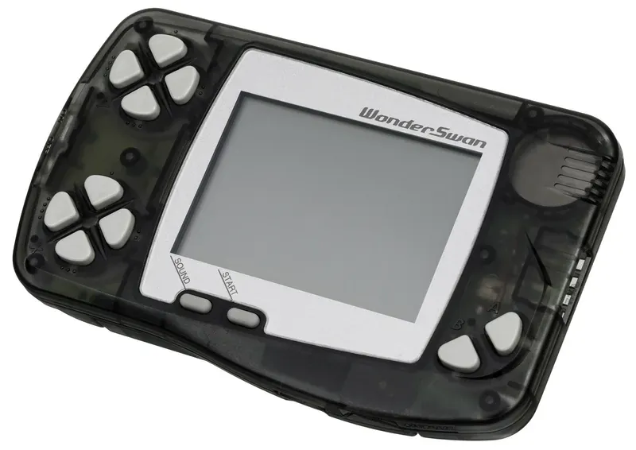

1999 年发布
Bandai WonderSwan
GB之父横井军平遗作 · 竖横双持 · 超低功耗30小时
约350万
系列总销量
16位
CPU
1节AA
电池
30小时
续航
📖 历史与背景
1999年3月4日，万代在日本发布WonderSwan——这是已故的Game Boy之父横井军平的遗作。横井军平于1997年因车祸去世，WonderSwan延续了他「成熟技术的水平思考」设计哲学：用低成本技术实现创新体验。
WonderSwan最独特的设计是支持纵向和横向两种持握方式。纵向持握时使用左侧4方向键+2个动作键；横向持握时使用上下两组方向键+4个动作键，类似Game Boy的布局。这让游戏可以按最适合的方向设计。
WonderSwan仅用1节AA电池就能续航30小时——这在当时是极为惊人的能效。横井军平的设计哲学是「低功耗+长续航+创新体验」，与Game Boy的理念一脉相承。价格也仅4800日元，远低于Game Boy Color的6900日元。
⚙️ 硬件规格
CPU
NEC V30 MZ 16位 (3.072MHz)
屏幕
2.49寸 224×144 FSTN单色
色数
黑白8级灰度
电池
1节AA电池（约30小时）
方向
纵横向均可持握
按键
纵向4方向+2键 / 横向8方向+4键
音效
4通道PSG + 2通道PCM
重量
约93g
🎮 经典游戏阵容
Gunpey
1999 · 益智
横井军平亲自设计的消除游戏
Final Fantasy
2000 · RPG
FF1的WonderSwan重制版
Final Fantasy II
2000 · RPG
FF2掌机首移植
SD高达 G Generation
1999 · 战棋
高达系列战棋游戏
超级机器人大战Compact
1999 · 战棋
机战掌机首作
魔界村
2000 · 动作
经典硬核动作游戏移植
Rhyme Rider Kerorican
2000 · 音乐
节奏游戏创意之作
大海盗
1999 · 冒险
横版动作冒险
🏆 市场表现与影响
- 系列总销量：WonderSwan（黑白）约155万 + WonderSwan Color（彩色）约115万 + SwanCrystal约8万 ≈ 350万台
- 市场份额：日本掌机市场一度占据约8%份额，但在Game Boy Advance发售后迅速萎缩
- FF移植：史克威尔（Square）选择在WonderSwan上重制《最终幻想》系列——这曾是FF系列首次在非任天堂平台出现，意义非凡
- 万代退出：2003年万代宣布停止WonderSwan系列的生产和支持，全面退出掌机市场
- 历史地位：WonderSwan是日本游戏史上最后一款由非任天堂/索尼厂商推出的有影响力掌机
💡 趣闻与冷知识
- WonderSwan的名字来自横井军平的「Wonder」理念和万代的「Swan」（天鹅）标志——据说横井军平生前参与了命名
- WonderSwan是史上唯一一款支持纵向和横向两种持握方式的掌机——某些游戏甚至可以在两种方向间切换
- 史克威尔选择WonderSwan作为FF系列的回归平台，是因为当时Square与任天堂关系紧张——后来FF移植计划转移到了GBA和PSP
- WonderSwan Color（2000）是彩色版，屏幕升级为4096色反射式FSTN——但发售时Game Boy Advance已即将推出，市场窗口极窄
- SwanCrystal（2002）是WonderSwan系列的最后一款型号，采用TFT液晶屏改善可视角度，但仅售约8万台便停产